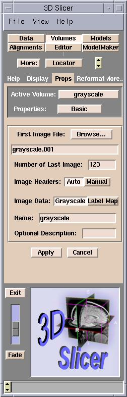

A volume is a collection of volume elements (voxels) of an image. A slice is an example of a volume.
Slicer can read medical image volumes of various types (including GE Signa and Genesis data, DICOM (digital imaging and communications in medicine) slices, and non-header image data). If Slicer does not recognize the header automatically, you may enter the necessary information manually, so that Slicer can read the volume.
To read in a volume, start at the Data panel and click Add Volume. The Props tab of the Volumes panel will appear.
